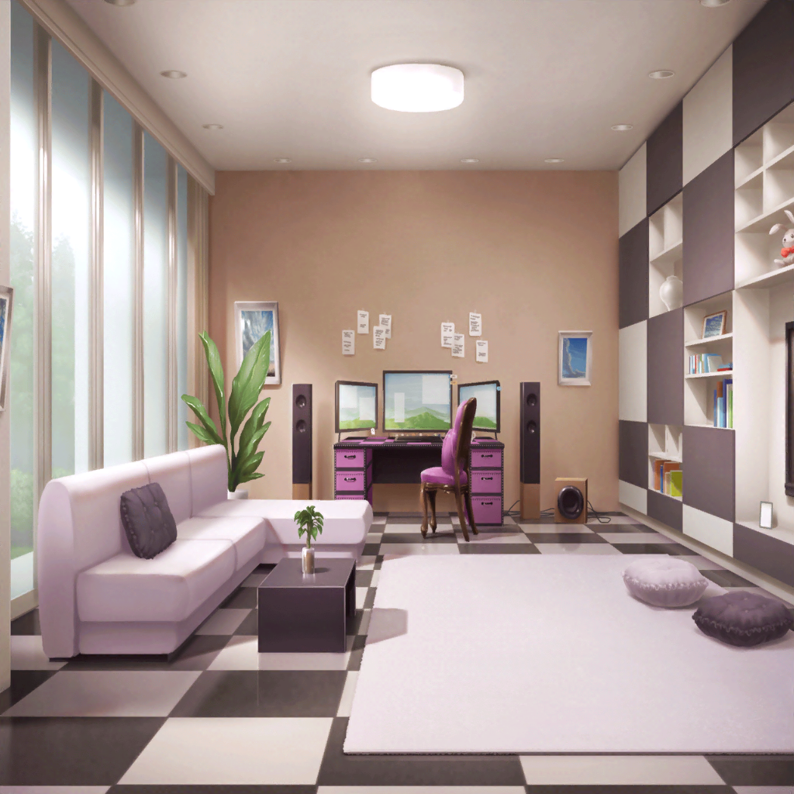

翌日
宇田川家
巴
えっと……『①あこに謝る ②あこの演奏が上手になったのが
嬉しかった話する ③自分の思ってること話す』
巴
ホントにこれで大丈夫か、アタシ……
巴
はあ〜……
あこ
あ……お、おねーちゃん。おはよう……
巴
あ、あこ！ おはよう！
あこ
……
巴
……
巴・あこ
あのさっ！
あのね……
巴
スタジオ行かないか！？ 今から！
あこ
えっ！？
巴
久しぶりに一緒に演奏したくってさ。どうだ……？
あこ
う、うんっ！ 行きたい！
 スタジオ
スタジオ
巴
二人で演奏するの、ホントに久しぶりだったな！
あこがRoseliaに入ってからは
ほとんどやってなかったよな
あこ
う、うん……
巴
あのさ……
巴
その、この間はごめんな。
あこに『アタシを目指さなくてもいい』なんて言って
あこ
あ……
巴
あこがせっかくアタシを慕って、追いかけてくれてたのに
あんなこと言っちゃってさ。あこの悲しそうな顔を見て、
本当に反省した
巴
それでさ……
巴
（……あこの演奏が上手になったことを話して、
そのあと……）
あこ
おねーちゃん……？
巴
（けど……アタシが全部話したら、あこの不安そうな顔が
晴れるのか？ 話して、どうなる？）
巴
（いや……やっぱりいいや）
巴
あこ、ホントに演奏うまくなったな！
アタシ、びっくりしたんだよ
あこ
え……っ！？
巴
いやー、アタシもがんばらなきゃな！
ずっとずっと、あこのカッコイイでいたいし！
あこ
あのね……あこ、おねーちゃん卒業だって言われて、
ショックだったの。すごい、かなしくって……
あこ
もしかしておねーちゃんにとってあこって迷惑だったのかな？
とか色々考えちゃったりして……でもね！
あこ
あこ、おねーちゃんが世界で一番カッコイイって思ってる！
優しくて、ドラムが上手で、カッコよくて、
あと……カッコよくて……
あこ
カッコイイおねーちゃんが大好きだから……えっと……
巴
あこ……
巴
あっはは！ あこ、ありがとう
巴
あこ、なんでアタシが今、ドラムやってるか知ってるか？
あこ
え？ おねーちゃん、いつも商店街のお祭りで
和太鼓やってたから、それで……
巴
アタシが和太鼓はじめたのって、あこが
『おねーちゃん、カッコイイ！』って言ってくれたからなんだ
巴
最初はそれがうれしくって、和太鼓やってたんだけど
だんだん和太鼓自体が好きになっていって。
で、今Afterglowでドラムやってるアタシがいる
巴
ダンス部に入ったのだって、あこと一緒に
ダンスするゲームやってるうちにハマったからだし
巴
今のアタシがあるのは、あこがいてくれたからなんだ
巴
だから、あこには感謝してる！
迷惑だなんてこと、絶対にない
あこ
あこだって！ おねーちゃんがドラムやってるのが
カッコよかったから、あこもはじめたし！
あこ
おねーちゃんがカッコよかったから一緒にダンス部に入って！
あこ
おねーちゃんみたいに
カッコよくなりたいなって思って、Roseliaに入って
あこ
全部……
全部おねーちゃんみたいになりたかったから、だからっ！！
巴
うん。そうだよな。
あこのおかげで今のアタシがあって、
アタシがいたから今のあこがいて……
巴
あこがいればアタシ、もっともっとカッコよくなれる気がするよ
巴
だからさ、これからも二人で一緒にカッコよくなっていこうな
あこ
……っ！ おねーちゃん！
あこ
うんっ！！ あこ、これからもおねーちゃんのこと
追いかけるっ！！ カッコイイあこのこと、見てほしい！
巴
ああ、もちろんだ！